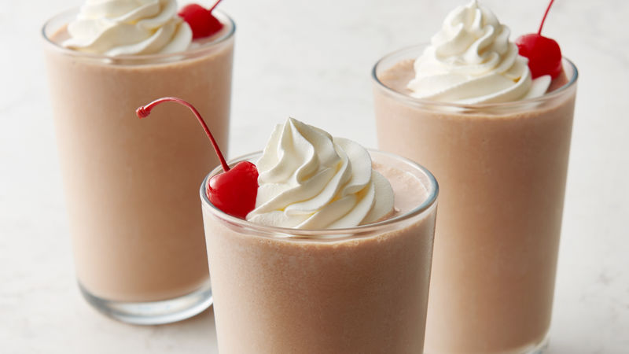

Milkshake

Description
There’s no need to head out to the malt shop when you have this easy milkshake recipe on hand.
The ultimate in retro comfort food, milkshakes are actually very easy to make at home.
You need just three ingredients, two steps and 10 minutes to whip up this chocolate milkshake recipe in your blender.
Ingredients
- 3/4 cup milk
- 1/4 cup chocolate-flavored syrup
- 3 scoops (1/2 cup each) vanilla ice cream
Method
- In blender, place milk and syrup. Cover and blend on high speed 2 seconds.
- Add ice cream. Cover and blend on low speed about 5 seconds or until smooth. Pour into glasses. Serve immediately.